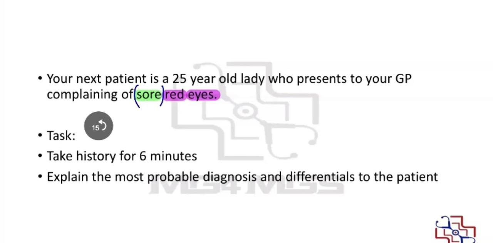

Source: Dr. Amir workshop — Med workshop 2 - 2026 / CLASS 3 OPHTHALMOLOGY (Aug 2026 drop) · Specialty: ophthalmology
A 25-year-old woman presents to the practice with red eyes and eye pain (some candidates recall it as red eyes only). Tasks: take a history for six minutes, then explain the most probable diagnosis and differentials. No photograph is provided.
Bacterial vs viral - best separated by the discharge: viral discharge is usually watery and clear; bacterial discharge is thick and yellow, sometimes with visible pus at the lid margins. Both cause a burning sensation, mild pain, redness and watering.
Allergic conjunctivitis - typically bilateral, dominated by itch, on a strong atopic background (personal/family history of asthma, eczema, hay fever) and tends to be recurrent. Infective conjunctivitis often begins in one eye and spreads to the other through rubbing/contagion.
Redness pattern: where is it red - eyeball, conjunctiva or eyelids? One or both eyes? Timing and duration (usually acute), first episode, constant vs intermittent, worsening, and anything that makes it better or worse.
Pain (SIQOORA): site, quality, and specifically whether blinking or eye movement worsens it (screening for orbital cellulitis).
Eyelid questions: swelling, redness, discharge (this patient has discharge - clarify colour [clear], watery vs thick [watery]; volume and odour not essential), itch (patient says no; remember any conjunctivitis can itch).
Eye questions: vision problems, double vision, redness of the eye itself, photophobia, floaters/flashes, pain on eye movement.
Risk factors: contact-lens use, occupation, contact with similar cases (housemate has the same red-eye symptoms), trauma, sexual history.
Systemic: fever (no), headache/nausea/vomiting (no), fatigue (no), runny nose/flu-like symptoms (had these last week), rash (no).
Findings (2025 recall): red eye, clear watery discharge, recent upper respiratory tract infection, and an affected housemate. Absence of blurred vision, fever and other ocular problems supports viral conjunctivitis. Explain it as an infection of the surface covering of the eye, most likely viral, supported by clear watery discharge, a contact with the same illness, and a preceding viral URTI that can trigger it.
Differentials: other conjunctivitis subtypes (bacterial, allergic); eyelid causes (blepharitis, stye, chalazion); and other eye causes (glaucoma, orbital cellulitis, corneal ulcer, uveitis, scleritis/episcleritis).
In an older version the patient wears sunglasses (embarrassed by very red eyes), reports bilateral red painful eyes with burning quality, clear watery discharge and feeling hot, plus rash and recent travel. A positive travel history is explored with the ABCDEF framework: where travelled (e.g. Brazil, one week ago), activities (bushwalking, insect/tick bites), contact with unwell people or animals, drug use/blood exposure, tattoos/piercings, food and water (street food, unbottled water, swimming in creeks/lakes), and pre-travel vaccination review. This links to a historical Zika-virus outbreak recall, though clinically it remains a viral conjunctivitis.

Reviewed by: physical-examination-expert (Australian clinical educator, ophthalmology focus) · fact-checked against the irStudy medical textbook RAG index.